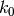

skrf.media.rectangularWaveguide.RectangularWaveguide¶
- class skrf.media.rectangularWaveguide.RectangularWaveguide(frequency, a, b=None, mode_type='te', m=1, n=0, ep_r=1, mu_r=1, *args, **kwargs)¶
Rectangular Waveguide medium.
Represents a single mode of a homogeneously filled rectangular waveguide of cross-section a x b. The mode is determined by mode-type (te or tm) and mode indecies ( m and n ).
Quantity Symbol Variable Characteristic Wave Number  k0 Cut-off Wave Number kc Longitudinal Wave Number kz Transverse Wave Number (a) kx Transverse Wave Number (b) ky Characteristic Impedance 
Z0
Attributes
| characteristic_impedance | Characterisitc impedance |
| ep | The permativity of the filling material |
| k0 | Characteristic wave number |
| kc | Cut-off wave number |
| kx | Eigen value in the ‘a’ direction |
| ky | Eigen-value in the b direction. |
| mu | The permeability of the filling material |
| propagation_constant | Propagation constant |
| z0 | Port Impedance |
Methods
| Z0 | The characteristic impedance |
| __init__ | RectangularWaveguide initializer |
| capacitor | Capacitor |
| delay_load | Delayed load |
| delay_open | Delayed open transmission line |
| delay_short | Delayed Short |
| electrical_length | calculates the electrical length for a given distance, at |
| from_csv | create a Media from numerical values stored in a csv file. |
| guess_length_of_delay_short | Guess physical length of a delay short. |
| impedance_mismatch | Two-port network for an impedance miss-match |
| inductor | Inductor |
| kz | The Longitudinal wave number, aka propagation constant. |
| line | Matched transmission line of given length |
| load | Load of given reflection coefficient. |
| match | Perfect matched load ( ). ). |
| open | Open ( ) ) |
| resistor | Resistor |
| short | Short ( ) ) |
| shunt | Shunts a Network |
| shunt_capacitor | Shunted capacitor |
| shunt_delay_load | Shunted delayed load |
| shunt_delay_open | Shunted delayed open |
| shunt_delay_short | Shunted delayed short |
| shunt_inductor | Shunted inductor |
| splitter | Ideal, lossless n-way splitter. |
| tee | Ideal, lossless tee. |
| theta_2_d | Converts electrical length to physical distance. |
| thru | Matched transmission line of length 0. |
| white_gaussian_polar | Complex zero-mean gaussian white-noise network. |
| write_csv | write this media’s frequency, z0, and gamma to a csv file. |

Previous topic
skrf.media.distributedCircuit.DistributedCircuit.write_csv
Next topic
skrf.media.rectangularWaveguide.RectangularWaveguide.characteristic_impedance